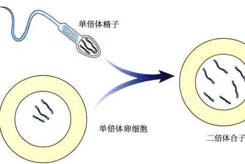
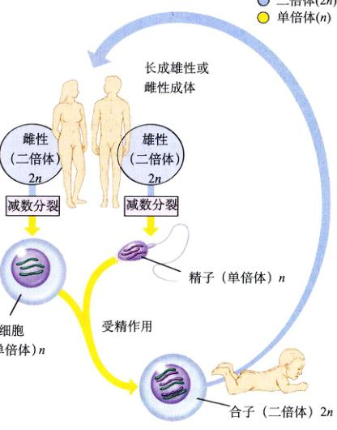
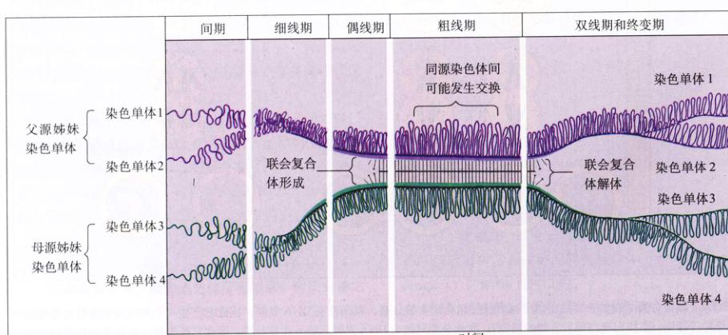
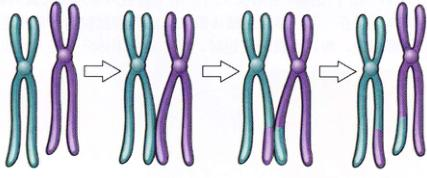
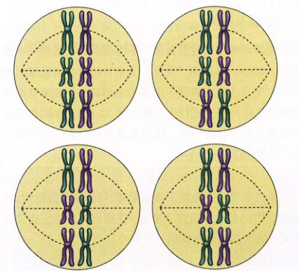

图 12.1 正在进行有丝分裂的植物细胞 (600×) 这是一张紫鸭跖草 (Tradescantia) 产生花粉细胞时的冰冻切片，显示了减数分裂的几个阶段。
大多数的动物和植物都进行有性生殖。两性产生的配子结合形成一个细胞，经过反复的有丝分裂，最终产生一个拥有 10¹⁴ 个细胞的成熟个体。配子是一种称为减数分裂的特殊的细胞分裂形式的产物（图 12.1），这也是本章的主题。减数分裂要比有丝分裂复杂得多，对其细节方面我们还不太了解，但基本过程还是很难楚的。而且有性生殖的深远意义也很明显：减数分裂对产生大量的遗传多样性有重要作用，而遗传多样性是生物进化的原材料。
在 Walther Flemming 于1882年发现染色体几年后，比利时细胞学家 Pierre-Joseph van Beneden 惊讶地发现在蛔虫 (Ascaris) 中不同种类的细胞有不同的染色体数目。他特别地观察到每个配子 (gamete)（卵细胞或精子）含有两条染色体，而胚胎和成熟个体的体细胞（无生殖能力）含有四条。
van Beneden 通过观察，于1887年提出，拥有其他细胞全部染色体数目一半的卵细胞和精子相互融合产生单个细胞称为合子 (zygote)。与所有体细胞一样，合子含有每条染色体的两个副本。这种由配子融合形成新细胞的方式称为受精 (fertilization) 或融合生殖 (syngamy)。
即使对于早期的研究者来说，有一点是显然的：配子必须引入某种机制来减少染色体的数目，使其达到其他细胞的一半。否则每一次的受精都将使染色体数量增倍，只需要经过几代，细胞中的染色体就能达到一个不可思议的数目。例如，人类体细胞有46条染色体，经过10代，其染色体数目就会超过 47000 条 (46 × 2¹⁰)。
当然，染色体数目不会如此迅速地增加。因为在配子形成过程中出现了一种特殊的减数分裂，产生的细胞染色体数目为正常细胞的一半，故随后这两个这样的细胞结合就确保了不同代的个体之间染色体数目的恒定。而这一分裂过程正是本章的主题——减数分裂 (meiosis)。
减数分裂和受精组成了一个生殖周期。成熟个体的体细胞中有两套染色体，故称其为二倍体 (diploid) 细胞，而配子中只有一套染色体，因此称为单倍体 (haploid)。包含减数分裂和受精交替的生殖称为有性生殖 (sexual reproduction)，其突出特点就是子代从双亲那里继承染色体（图 12.2）。例如，你从来自母亲的卵细胞继承了母亲的23条染色体，而从参与受精的精子继承了来自父亲的23条染色体。
(1) 体组织 (somatic tissue)：所有有性生殖生物的生活史，都遵循相同的基本规律，即二倍体和单倍体染色体数目交替出现（图 12.3，图 12.4）。受精后，生成的合子开始进行有丝分裂。这一细胞最终产生成熟个体的所有细胞，这些细胞称为体细胞 (somatic cell)。除去极少数意外和像免疫系统中那样特殊的产生变异情况，每个成体的体细胞与合子的基因是完全相同的。
单细胞真核生物，包括多数的原生生物，其个体细胞功能上作为配子，与其他配子细胞相结合。合子可能先进行有丝分裂，或者立即进行减数分裂产生单倍体个体。在植物中，由减数分裂产生的单倍体细胞，经有丝分裂形成一个多细胞的单倍体期，这种单倍体期中的特定细胞最终分化为卵细胞或精子。
(2) 种系组织 (Germ-line Tissue)：在动物发育的早期，那些最终通过减数分裂成为配子的细胞就已与体细胞分离了，这些细胞通常称为种系细胞 (germ-line cells)。无论是体细胞还是产生配子的种系细胞都是二倍体，不过体细胞是通过有丝分裂形成遗传上相同的二倍体子细胞，生成配子的种系细胞则通过减数分裂产生单倍体配子。
图 12.2 携带有双亲染色体的二倍体细胞 一个二倍体细胞含有每种染色体的两个副本，一条来自母本的单倍体卵细胞，一条来自父本的单倍体精子。
图 12.3 世代交替 在有性生殖过程中，单倍体细胞生物与二倍体细胞或生物交替出现。
不同生物的细胞分裂机制重要细节有所不同，特别是在染色体的分离机制上，原生生物和真菌的分裂过程与我们将要讨论的动、植物有相当大的区别。二倍体生物体的减数分裂有两次分裂，其中有丝分裂只有一次。尽管减数分裂与有丝分裂有许多共同特点，但减数分裂还有3个独特的特征：联合 (synapsis)、同源重组 (homologous recombination) 和减数分裂 (reduction division)。
减数分裂的第一个特征出现在第一次细胞核分裂早期。随着染色体的复制，同源染色体 (homologous chromosome or homologue)（见第11章）沿长度方向进行配对，这一形成同源染色体复合物的过程称为联合。
减数分裂的第二个特征是同源染色体之间物理连接的部位（图 12.5a）发生的基因交换。配对染色体之间进行的交换过程称为交换 (crossing over)。接下来染色体被一起拉到分裂细胞的赤道面上，随后同源染色体被微管分别拉向相对的两极。这一过程结束后，两极上的每一组染色体均含有两条同源染色体之一。每极均为单倍体。
图 12.4 有性生活史 在动物中，减数分裂之后紧跟着就是受精，因此生活史的绝大部分时期都是二倍体。
图 12.5 减数分裂的特征 (a) 联合把同源染色体拉到一起，为两条染色体上交换片段（称为联会）创造条件。(b) 减数分裂通过省略减数分裂 II 之前的染色体复制产生单倍体配子，从而保证生殖循环过程中染色体数目恒定。
倍体，拥有的染色体数目为原二倍体细胞的一半。在第一次核分裂中，姊妹染色单体不分离，所以每条同源染色体仍含有两条染色单体。
减数分裂的第三个特征是在两次核分裂之间染色体不进行复制，所以在减数分裂结束后，每个细胞含有的染色体数目为原来的一半（图 12.5b）。第二次分裂在许多方面与一般的有丝分裂相同。但由于第一次分裂过程中交换的出现，减数分裂 II 中的姊妹染色单体并不完全相同。
尽管减数分裂是一个连续的过程，但为了更好的研究它，我们硬性地将其分为几个阶段，按惯例称之为减数分裂 I 和减数分裂 II。与有丝分裂一样，每个阶段又进一步分成前期、中期、后期和末期（图 12.6）。其中减数分裂的前期 I 比有丝分裂的前期复杂得多。
前期 I 中，DNA 更紧密地螺旋，染色体在光学显微镜下首次变为基质中可见的细线。由于 DNA 在减数分裂前期已经完成复制，每条细线实际上含有由着丝粒连接的两条姊妹染色单体。在前期 I 中，同源染色体相互靠近日进行联合，交换 DNA 片段，然后彼此分开。
前期 I 在习惯上可以分为5个连续的时期：细线期 (leptotene)、偶线期 (zygotene)、粗线期 (pachytene)、双线期 (diplotene) 和终变期 (diakinesis)。
图 12.6 减数分裂与有丝分裂的比较 减数分裂包括两次核分裂，其间没有 DNA 复制，因此它产生4个含有原来细胞一半数目染色体的子细胞。交换出现在减数分裂的前期 I。有丝分裂只包含 DNA 复制后的一次核分裂，因此它产生两个含有原来细胞相同数目染色体的子细胞。
图 12.7 联合复合体结构 子囊菌 Neotiella rutilaus（一种盘菌）联合复合体的一部分。
在前期中，染色体末端与核膜的特定部位相联。由于同源染色体连接的部位相邻，所以同源染色体被拉到一起。在异染色质顺序的指导下，它们相互并排靠拢，这个过程就称为联合。
联合复合体内进行的重组一般认为是粗线期由被称为重组结 (recombination nodule) 的蛋白集合完成的。一个重组结的直径约 90 nm，跨越联合复合体的中心部分。在联会复合体中，重组结为一个由多种酶构成的“重组机器”，每个都引起一次重组。交换过程的细节并不清楚，不过它包括一系列复杂过程，在此过程中 DNA 片段在非姊妹染色单体或姊妹染色单体间进行交换。对于人类来说，平均每对染色体有两三处这样的交叉出现。
随着交换的完成，联合复合体解体，同源染色体通过核膜彼此分离。这时每种染色体有4条染色单体（两条同源染色体，每条含两个姊妹染色单体）。这4条染色单体并不完全分离，它们通过两种方式连在一起：① 每条同源染色体中刚由 DNA 复制产生的两条姊妹染色单体通过共同的着丝粒相连；② 配对的同源染色体通过联会复合体中交换发生的地方相联。
图 12.8 前期 I 的时间过程 前期 I 的 5 个时期代表了联合复合体的形成与解体的阶段，联合时，蛋白质网格把同源染色体连在一起。
图 12.9 交叉 这张显微照片显示了两个交换或交叉。
交换通常可以通过显微镜下所看到的 X 形结构——交叉 (chiasma，希腊语“交叉”之意) 的存在来证明（图 12.9）。交叉的存在表明了两条染色单体（分别来自两条同源染色体）部分进行了交换（图 12.10）。如同小环在两根绳上向下移动一般，随同源染色体分离，交叉移到染色体臂的末端。
图 12.10 交换的结果 交换过程中，非姊妹染色单体（如图）或姊妹染色单体之间将交换片段。
接近中期 I，减数分裂 I 的第二阶段像有丝分裂一样，核膜消失，微管形成纺锤体。前期 I 的终变期，交叉沿着末端移动，称为末端交叉 (terminal chiasmata)。在中期 I 中，末端交叉使同源染色体结合在一起，故而着丝粒只有一面朝向复合物外，另一面则与另一条同源染色体相对（图 12.11）。因此，纺锤体微管只能连接靠着丝粒外侧面的着丝点蛋白，两条同源染色体着丝粒只与由其对应一极产生的微管相连。这种一侧连接的方式与有丝分裂中两侧着丝粒均与微管相连有明显差别。
每对相互联接的同源染色体随后在赤道板上排成一排，每对中两个同源染色体在纺锤体轴上定位是随机的：来自母本或父本的同源染色体都可能朝向给定一极（图 12.12），图 12.13 表明了中期 I 的染色体排列情况。
前期和中期加起来占整个减数分裂 I 的 90% 以上，经过这一漫长的阶段，减数分裂 I 就迅速结束了。后期 I 和末期 I 进行得很快，接着并没有合成 DNA 的间期，第二吹分裂就开始了。
在后期 I 中，构成纺锤丝的微管开始变短，由于其缩短，交叉被破坏，着丝粒被拉向两极，染色体也随之而去。由于微管只连接着丝粒的一面的着丝点，所以单个着丝粒并不像有丝分裂中那样被拉成两半变成两个子代着丝粒，而是整个着丝粒带着一对姊妹染色单体移向一极。
图 12.11 由于交换产生的交叉对中期 I 染色体排列有关键的影响 在减数分裂的第一次分裂中，交叉使一条染色单体与另一条染色单体连接在一起，结果纺锤体微管只能与着丝粒的一侧相连，因而同源染色体被拉向不同的两极。在有丝分裂中，微管与着丝粒两侧都相连，所以当微管变短时，姊妹染色单体分开进入相反的两极。
当纺锤体丝收缩完成以后，每极都含有完整单倍体的染色体组成，即每对同源染色体中的一条。由于同源染色体在赤道板上的定位是随机的，任何一极的每条染色体既可能来自父本，也可能来自母本。结果，不同染色体中的基因自由组合，也就是说明，减数分裂期 I 造成了亲本染色体在配子中的自由组合 (independent assortment)。
末期 I 开始之前，染色体已经分成两组，分别位于细胞的两极。核膜在每个子核周围重新形成。由于子核中的每条染色体在减数分裂期 I 前进行了复制，所以现在每条染色体都含有由着丝粒相连的两条姊妹染色单体。重要的是，由于前期 I 出现的交换（图 12.14），姊妹染色单体并不是完全一致的。在末期 I 后可能发生也可能不发生胞质分裂。而第二次分裂——减数分裂 II，则在经过不同长短的间隔期后进行。
经过一个不进行 DNA 合成的短暂间期，减数分裂的第二次分裂开始了。
减数分裂 II 和普通的有丝分裂很相似。前期 II、中期 II、后期 II、末期 II 先后快速进行。
图 12.12 染色体在赤道板上的随机排列 染色体可能的排列方式数是以2为底数，染色体对数为指数所得的幂值。在这个假设的细胞中有3对染色体，故有 8 (2³) 种排列方式，图上列举了4种。每种排列方式都将产生拥有不同亲本染色体组合的配子。
图 12.13 百合的减数分裂过程 注意中期 I 的染色体排布。
图 12.14 经过减数第一次分裂，姊妹染色单体是不完全相同的 所谓的“斑色”染色体，每条含有荧光标记的 DNA 链，表明减数分裂 I 中姊妹染色单体之间相应的遗传物质发生了交换。
图 12.15 减数分裂是如何进行的 减数分裂包含两次细胞分裂，产生4个单倍体细胞。
(1) 前期 II：细胞两极的核膜消失，纺锤体纤维出现。
(2) 中期 II：纺锤丝与着丝粒两侧相连，染色体排列在赤道面上。
(3) 后期 II：纺锤丝收缩，使得着丝粒分裂，拉动姊妹染色单体分别向两极移动。
(4) 末期 II：核膜在4组子代染色体周围重新形成。
分裂的最终结果是产生了4个包含单倍体染色体数目的细胞（图 12.15），由于前期 I 的交换，没有任何两个细胞是完全相同的。然后，核膜在每套单倍体染色体周围形成。这些拥有单倍体核的细胞可能直接生成配子，如动物，也能自己进行有丝分裂最后产生配子的，如植物、真菌和许多原生生物；或者如某些植物和昆虫那样，生成不同倍性的个体。
不是所有生物的生殖都是有性的。在无性生殖 (asexual reproduction) 中，个体完全从一个母本中继承所有的染色体，因此在遗传上与母本是完全相同的。细菌就是无性生殖，通过二分裂产生两个拥有完全相同遗传信息的子细胞。多数的原生生物都是无性生殖，只有环境条件恶劣时才选择有性生殖。在植物中，无性生殖是很普遍的，其他许多细胞生物也能进行无性生殖。在动物中，无性生殖常以细胞团出芽的方式出现，这些细胞通常通过有丝分裂形成新个体。
即使出现减数分裂和配子形成，仍可能是无性生殖。由未受精卵发育产生性成体的形式称为孤雌生殖 (parthenogenesis)，在节肢动物生殖中是很普遍的。例如，在蜜蜂中，受精卵发育成二倍体雌体而未受精卵发育成单倍体雄体。孤雌生殖甚至在脊椎动物中也有发生。一些蜥蜴、鱼类及两栖类动物都能通过这种方法繁殖，其未受精的卵经过没有细胞分裂的细胞核有丝分裂产生二倍体细胞，随后发育成成体。
如果生殖能通过无性过程进行，那么为什么会出现有性生殖呢？这个问题引起了广泛的讨论，尤其是在进化生物学家中。性别无论对于种群还是物种都是一个很大的进化代价，减数分裂中染色体自由组合和交换有利于多样性的产生。然而，进化的发生是由于个体生存和繁殖水平的变化，而不是种群水平上。而且有性生殖的后代个体并没有明显的增加优势。实际上，重组在进化过程中既有建设性又有破坏性。减数分裂中染色体的分离倾向于破坏而不是产生新的具有优势的基因组合，结果有性生殖产生的后代中的一部分并不能像其亲代一样适应环境。实际上，越是个体越复杂，通过重组改进其适应性的可能性就越小，而破坏的可能性越大。因此我们无法理解一个成功适应了环境的个体通过参与有性生殖获得什么，因为如果这个个体进行简单的无性生殖，其所有后代都能保留其成功的基因组合。
关于性别的进化起源和保持，众多的进化生物学家还没有形成统一的意见，相互矛盾的假说很多。不同假说对不同的生物正确程度各不相同。
(1) DNA 修复假说 (the DNA repair hypothesis)：如果重组对个体的后代经常是有害的，那么进化出有性生殖有什么好处呢？尽管这个问题我们并不知道，但可以通过观察原生生物来获得一些启示。伴随减数分裂的重组通常不在原生生物中发生，因为原生生物只偶尔进行有性生殖。通常，只有在环境条件恶劣的情况下，两个单倍体细胞才会进行融合，产生二倍体合子。
为什么在环境条件恶劣的情况下，一些原生生物会产生二倍体细胞呢？少数学家提出只有二倍体细胞才能有效地修复某些种类的染色体损伤，尤其是双 DNA 链的损伤。辐射和化学事件都能在生物中引起这种损伤。随着生物体变得越来越大，其寿命越来越长，修复这种损伤的能力变得十分重要。减数分裂早期使用同源染色体确定配对的联合复合物，最初可能是作为一个 DNA 双链损伤修复机制进化产生的，其方法是利用没有损伤的同源染色体作为模板来修复已损伤的染色体，短暂的二倍体状态恰好为这种修复提供了机会。在酵母中，一种使染色体双链修复系统失活的突变也会阻止交换，说明联合与修复过程共有共同的机制。
(2) 传染假说 (the contagion hypothesis)：一种非同一般、有趣的假说认为，性别起源于可移动的遗传因子感染真核生物的副作用。
图 12.16 自由组合增加了遗传的多样性 由于染色体在赤道板上的排列是随机的，自由组合在子代中产生了新的基因组合。如图所示的细胞拥有3对染色体，可能产生8种不同的配子，每种含有亲本染色体的不同组合。
设想一个复制中的将要感染真核谱系 (eukaryotic lineage) 的转座因子 (transposable element)，如果拥有能促进与未感染细胞融合与联合的基因，那么它就能很容易地将自己复制到同源染色体上，从而迅速传播整个种群，直到所有的成员都含有它。在许多真菌中存在的奇异交配型“等位基因”，用这一假说可以得到很好的解释。这些交配型中的每一个实际上并不是等位基因，而是“特殊变体” (idiomorph)，即占据染色体中同源位置，但拥有不同序列表明其不是同源起源的基因。这些“特殊变体”基因可能仅仅是过去几种转座因子传染的遗迹。
(3) 红桃皇后假说 (the red queen hypothesis)：性别在进化上一个可能的优势在于，可以使种群现在有害但将来可能游泳的隐性等位基因储存起来。因为种群受到不断变化的物理与生物环境的约束，选择总是对这些等位基因起淘汰作用。但在有性生殖的物种中，由于杂合子的保护这些基因不至于被完全剔除，这使得大多数有性生殖的物种，在进化的绝大数时间里，总能跟上物理和生物环境不断变化的步调。这种“单调进化 (treadmill evolution)”有时又被称作“红桃皇后假说”，这个名字来源于 Lewis Carroll 所著《穿过镜子》 (Through the Looking Glass，又译为《镜中的世界》) 中红桃皇后 (Queen of Hearts) 对 Alice 说的一句话：“要想保持在原地，你就得竭尽全力不停地跑。”
(4) Miller 的棘轮：1965年，遗传学家 Herman Miller 提出，无性的种群伴随有一种突变的棘轮（一种装有防倒转的棘齿，故只能向一个方向转的齿轮）机制，不利的突变一旦出现，无性种群将无法消除，导致这类突变随时间不断积累，就像运行一个棘轮一样不可逆转。相反，有性种群可以通过重组产生为选择所偏爱的含较少不利突变的个体。性别也许只是一种降低突变造成负担的方法。
虽然我们只粗略地知道性别是如何进化的，但我们很清楚有性生殖对今天物种进化有很大的影响，这种影响来自于其快速产生新基因组合的能力。自由组合（图 12.16）、交换和随机受精都能产生遗传多样性。
无论是什么力量导致了有性生殖，其进化上的意义都是深远的。没有比遗传过程更快的方式产生多样性了，而后面的章节你将看到，遗传多样性是进化的原材料，推动进化前进并决定进化的潜在方向。许多时候，进化速度随遗传多样性水平的提高而加快，例如，对家畜如牛羊等通过选择增加组合层，能等到新基因组合出现才能有进一步进展。赛马培育者给出了一个生动的例子，纯种的赛马最初都是少数马个体的后代，对速度的选择已筛选完了有限数量基因的所有组合，大多数赛马的比赛纪录几十年一直保持不变。
矛盾的是，进化的过程既有革命性又有保守性。革命性是指进化速度随基因重组而加快，而大部分的重组得以益于有性生殖；保守性是指进化改变不总是被选择偏爱，选择有时可能保留已存在的基因组合。这种保守力量在一些不能自由的移动且生活于有特定限制环境的无性生殖生物中很强大。相反，脊椎动物体现出多样性的进化优势，有性生殖成为生殖的主要形式。